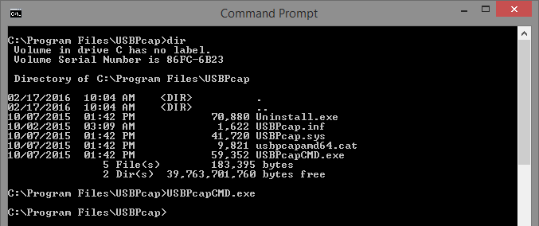
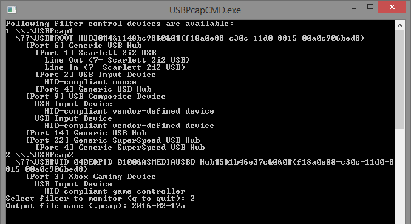

How To Sniff Xbox One Packets
Required Software
- Windows PC
- Xbox One Controller Driver for PC*
- USBPcap
Sniffing Data


- Plug in your controller
- Open the command prompt
- Navigate to the USBPcap directory
cd "C:\Program Files\USBPcap"- Run USBPcapCMD.exe, this will open a new window
USBPcapCMD.exe- Find your controller (likely listed as "Xbox Gaming Device")
- Enter the filter number of the controller, not the port number
- Filters are something like
2\\.\USBPcap2while ports are listed as[Port 2] - Give the file a name
- Press and release A, B, X, and then Y on the controller
- Press Ctrl + C on your keyboard, this will close the window
- Host your file on some service such as Google Drive or Dropbox and provide a link in your issue
- The file will be located at
"C:\Program Files\USBPcap"